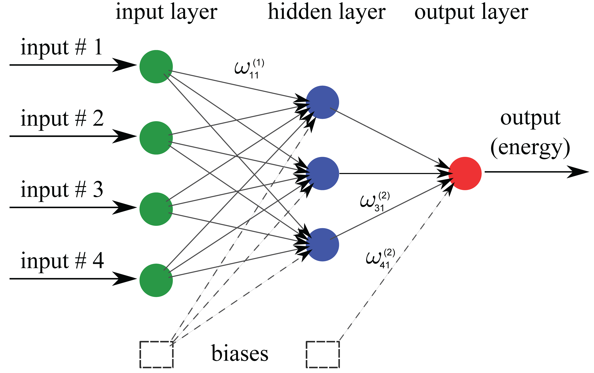

Theory¶
According to Born-Oppenheimer approximation, the potential energy of an atomic configuration can be assumed as a function of only nuclei positions. Potential energy is in general a very complicated function that in theory can be found by directly solving the Schrodinger equation. However, in practice, exact analytical solution to the many-body Schrodinger equation is very difficult (if not impossible). Taking into account this fact, the idea is then to approximate the potential energy with a regression method:
where \(\textbf{R}\) is the position of atoms in the system.
Atomic representation of potential energy¶
In order to have a potential function which is simultaneously applicable to systems of different sizes, the total potential energy of the system can to be broken up into atomic energy contributions:
The above expansion can be justified by assembling the atomic configuration by bringing atoms close to each other one by one. Then the atomic energy contributions can be approximated using a regression method:
Descriptor¶
A better interpolation can be achieved if an appropriate symmetry function \(\textbf{G}\) of atomic coordinates, representing the functional dependence of local energetics, is used as the input of regression operator:
Behler¶
Currently, only symmetry function \(\textbf{G}\) as suggested by Behler [1] as a function of pair-atom distances and three-atom angles, is implemented within Amp. Further local environment descriptors are planned to be implemented in the near future. Radial symmetry function of Behler type captures interaction of atom \(i\) with all atoms \(j\) as the sum of Gaussians with width \(\eta\) and center \(R_s\),
The next type is the valence angle symmetry function accounting for three-atom interactions. Behler valence angle symmetry function is constructed for all triplets of atoms \(i\), \(j\), and \(k\) by summing over the cosine values of the angles \(\theta_{ijk}=\cos^{-1}\left(\displaystyle\frac{\textbf{R}_{ij}.\textbf{R}_{ik}}{R_{ij}R_{ik}}\right)\), (\(\textbf{R}_{ij}=\textbf{R}_{i}-\textbf{R}_{j}\)), centered at atom \(i\), according to
with parameters \(\lambda\), \(\eta\), and \(\zeta\). The function \(f_c\left(R_{ij}\right)\) in the above equations is the cutoff function defining the energetically relevant local environment with value one at \(R_{ij}=0\) and zero at \(R_{ij}=R_{c}\), where \(R_c\) is the cutoff radius. In order to have a continuous force-field, the cutoff function \(f_c\left(R_{ij}\right)\) as well as its first derivative should be continuous in \(R_{ij}\in\left[0,\infty\right)\). One possible expression for such a function as proposed by Behler is
Figure below shows how components of fingerprints \({}^{1}\textbf{G}^{(i)}\) and \({}^{2}\textbf{G}^{(i)}\) change with, respectively, distance \(R_{ij}\) between pair atoms \(i\) and \(j\) and valence angle \(\theta_{ijk}\) between triplet of atoms \(i\), \(j\), and \(k\) with central atom \(i\):

Regression¶
The general purpose of the regression operator \(x\xrightarrow{\text{regression}}y\) with input \(x\) and output \(y\) is to approximate the function \(f\), \(y=f(x)\), where \(f\) may or may not have an explicit functional form, by using sample train data points \((x_i, y_i)\). The intent is to later use the approximated \(f\) for input data \(x_j\) (other than \(x_i\) in the train data set), and make predictions for \(y_j\). Typical regression algorithms include, but are not limited to, Gaussian processes, support vector regression, and neural network.
Neural network¶
Neural network is basically a very simple model of how the nervous system processes information. The first mathematical model was developed in 1943 by McCulloch and Pitts [2] for classification purposes; biological neurons either send or do not send a signal to the neighboring neuron. The model was soon extended to do linear and nonlinear regression, by replacing the binary activation function with a continuous function. The basic functional unit of a neural network is called “neuron”. A number of parallel neurons constitute a layer. A feed-forward neural network consists of at least an input layer plus an output layer. When approximating the PES, the output layer has just one neuron representing the potential energy. For a more robust interpolation, a number of “hidden layers” may exist in the neural network as well; the word “hidden” refers to the fact that these layers have no physical meaning. A schematic of a typical feed-forward neural network is shown below. In each neuron a number of inputs is multiplied by the corresponding weights and summed up with a constant bias. An activation function then acts upon the summation and an output is generated. The output is finally sent to the neighboring neuron in the next layer. Typically used activation functions are hyperbolic tangent, sigmoid, Gaussian, and linear function. The unbounded linear activation function is particularly useful in the last hidden layer to scale neural network outputs to the range of reference values. For our purpose, the output of neural network represents energy of atomic system.
References:
- “Atom-centered symmetry functions for constructing high-dimensional neural network potentials”, J. Behler, J. Chem. Phys. 134(7), 074106 (2011)
- “A logical calculus of the ideas immanent in nervous activity”, W. S. McCulloch, and W. H. Pitts, Bull. Math. Biophys. 5, 115–133 (1943)

{kind=link}